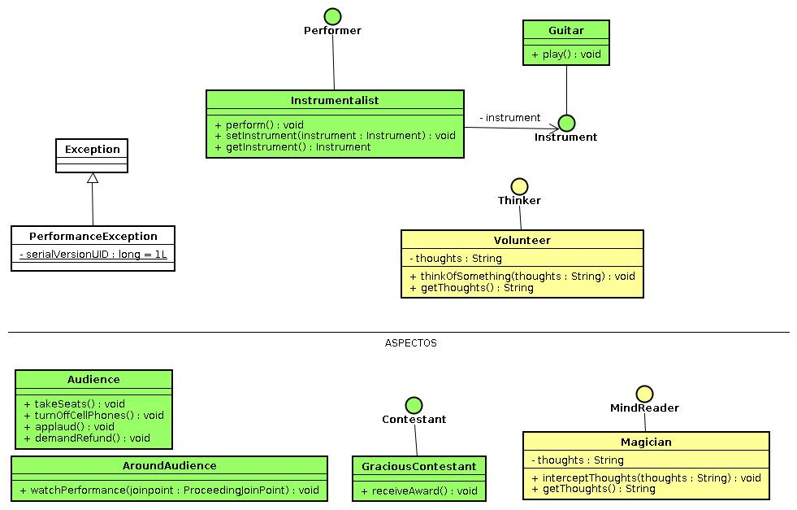

Aspectos en Spring

Ejercicio
-
- Probar la clase con los archivos de configuración spring-simple-idol,
spring-idol, spring-idol-2.
-
- Por qué se comporta diferente en cada caso?
-
- Usando la configuración 'spring-idol', haga que 'eddie' arroje una
excepción de tipo PerformanceException después de tocar su
instrumento.
- Qué comportamiento se da en este caso?